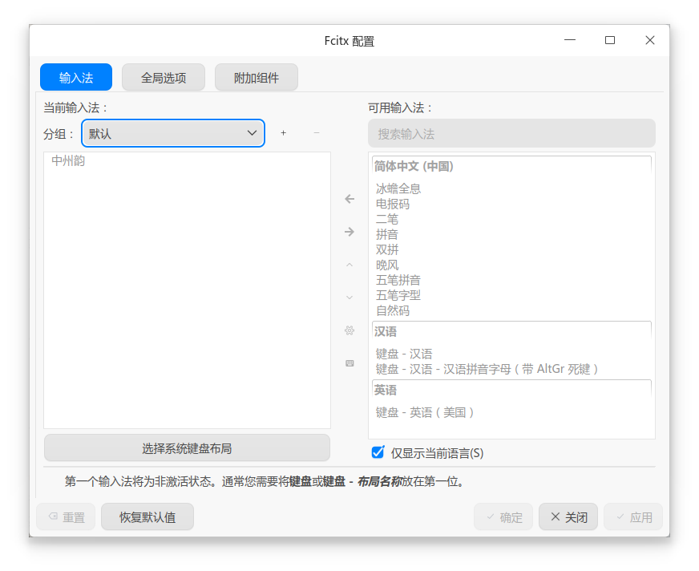

🐧 Linux 通用部署指引 (Fcitx5)
在 Linux Fcitx5 平台上，Rime 并不能独立运行，而是作为 Fcitx5 (小企鹅输入法) 的一个底层插件（即“中州韵”）来工作。请仔细阅读以下步骤，尤其注意依赖包的安装与按键冲突的防范。
1. 安装核心依赖环境
根据您使用的 Linux 发行版，选择对应的安装方式：
📦 发行版 A：Ubuntu / Debian 等 APT 系 (手动部署)
请打开终端，执行以下命令安装 Fcitx5 框架、Rime 插件以及必须的 Lua 和八股文模型依赖：
(注：安装完成后，请继续执行下方的 第 2 步 下载并手动解压万象方案。)📦 发行版 B：Arch Linux (AUR / ArchCN 仓库一键安装)
如果您是 Arch 用户并启用了 Arch Linux CN 仓库，您可以直接通过包管理器一键安装万象方案，免去手动解压的烦恼。
-
基础版 (Base) 包名：
rime-wanxiang-[拼写方案名]（如自然码：rime-wanxiang-zrm） -
增强版 (Pro) 包名：
rime-wanxiang-pro-[拼写方案名]（如自然码：rime-wanxiang-pro-zrm）
2. 下载万象素材 (非 Arch 用户)
如果您使用的是 APT 或其他手动包管理方式，请下载万象方案包与模型文件：
指南：Base 包与 Pro 包该下哪个？
-
🟢 Base (标准版) 包：主打省心顺滑，无需折腾，打字体验类似主流大厂输入法。
-
🔵 Pro (增强版) 分包：专为硬核辅码玩家打造，进行了词库编码层辅助码的携带。下载时认准自己使用的“辅助码类型”即可。
3. Fcitx5 基础设置与“排雷”
安装好软件后，请打开系统或 Fcitx5 的 输入法配置面板 (UI)，进行以下关键设置：
-
添加中州韵：在可用插件库中找到 【中州韵】，将其添加到左侧当前使用的输入法列表中。
-
清理冗余：建议将左侧除了【键盘-英语】和【中州韵】之外的其他中文输入法全部移除或移动到右侧。中英文切换有中州韵就完全够用了。

⚠️ 极度重要：清理 Fcitx5 快捷键防冲突
在使用 Fcitx5 时，非必要请将 Fcitx5 面板中无用的快捷键全部清空！
因为万象方案内部已经对快捷键做了极其深度的配置，如果 Fcitx5 也拦截了按键，会导致严重的冲突。
核心原则：能用 Rime 配置的，尽量使用 Rime，保持“一盘棋”思路。
4. 手动置入方案与模型 (非 Arch 用户)
打开终端或文件管理器，进入 Fcitx5 的 Rime 用户目录：
绝对路径：
- 放入模型：将下载好的
wanxiang-lts-zh-hans.gram放入该目录。 - 解压方案：将万象方案解压后的所有文件（切勿包含根目录）拖入该目录。如果提示覆盖，请允许。
Fcitx5 皮肤与外观设定须知
Rime 作为插件存在时，其界面完全被 Fcitx5 接管。
-
Rime 原本的皮肤配置参数（如
weasel.yaml/squirrel.yaml等）在 Linux 下完全无效。 -
设置候选词竖向/横向排列，需要在 Fcitx5 的设置面板中调整。
-
自定义皮肤请遵循 Fcitx5 的规则，将皮肤主题放入
~/.local/share/fcitx5/theme目录下。
5. 执行重新部署
点击系统托盘（状态栏）的 【企鹅】或【键盘】 图标 → 选择 【重新部署】 (或重启 Fcitx5)。
⏳ 耐心等待：由于 Rime 是源码式部署，需要将词库进行转换并对 Lua 等插件进行初始化加载。首次部署的编译量极大，可能需要 1 分钟以上。请耐心等待部署成功的通知，期间不要进行任何操作，避免卡顿影响心情。
6. 初始指令与个性化切换
部署成功后，万象的默认状态如下：
- 🟢 Base 标准版：默认开启 全拼。
- 🔵 Pro 增强版：默认开启 自然码双拼。
强烈建议执行一次激活指令
即使默认方案恰好是您需要的，我们也建议您利用万象强大的 斜杠指令 进行一次主动切换。这一步操作涉及到四个方案文件的自定义输入类型，不仅仅是主方案，背后的逻辑参照custom patch相关教程
例如，任意输入框，中文模式 直接打字输入 /zrm (切换自然码双拼) 或 /flypy (切换小鹤双拼)，然后再去状态栏点击一次 【重新部署】。这能确保万象的底层按键绑定完美契合您的输入习惯。